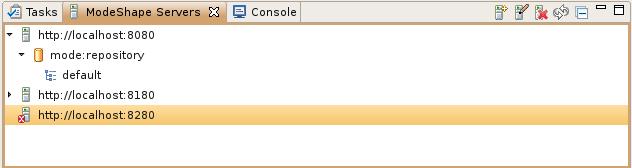
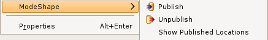
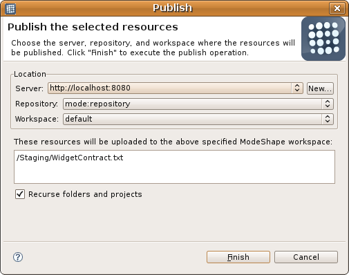
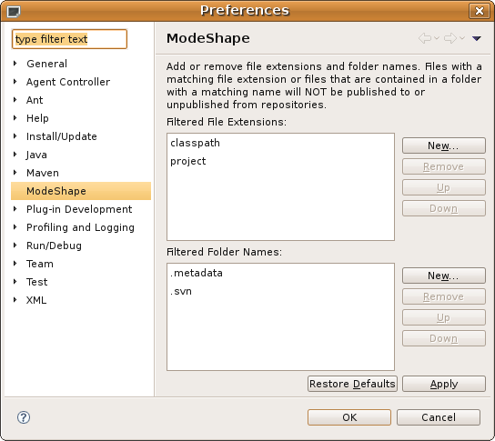
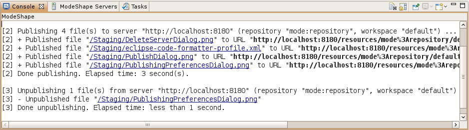

Last revised September 1, 2010
The ModeShape publishing feature, which is new to JBoss Tools, enables you to publish files to (upload) and unpublish files from (remove) ModeShape repositories. Once files are uploaded to a ModeShaper repository, the appropriate ModeShape sequencers will extract and add information, such as relationships and metadata. For more details on the ModeShape project visit the ModeShape project.
The ModeShape publishing feature consists of a ModeShape view, resource context menu, publishing wizard, preference dialog, and a Console view. Each of these are briefly discussed below.
|
ModeShape View |
The ModeShape view allows you to register ModeShape instances using a host URL, user, and password. A ModeShape instance is a host that is running the ModeShape REST service. Once a ModeShape instance is registered, the ModeShape view obtains the repositories and repository workspaces from ModeShape. These workspaces are where you can publish your files. This view also allows you to unpublish files from a workspace in case you ever need to do that. Using the ModeShape view you can unregister (remove) a ModeShape instance, reconnect to a ModeShape instance, and edit a ModeShape instance's properties. The ModeShape view quite simply is how you maintain your registry of ModeShape repositories. And the ModeShape registry is persisted from session to session. Here is what the ModeShape view looks like:  |
|
Resource Context Menu |
Once you have one or more ModeShape instances registered, you can now start publishing files. When you select one or more projects, folders, or files in your Eclipse workspace, the context menu for those files will include a ModeShape submenu that allows you to publish or unpublish those resources. If only one resource is selected you can also view the locations where that resource has been published. When you publish or unpublish the files, the publishing wizard is displayed. Here is what the ModeShape resource context menu looks like:  |
|
Publishing Wizard |
The publishing wizard allows you to choose which ModeShape repository workspace you want the operation to take place. It also lists the files that will be involved in the operation. When a project or folder is selected all their included files are published. But there might be certain folder names and certain file types that you never want to publish. Wouldn't it be nice to filter those out of all your publishing operations? The ModeShape preferences dialog helps you do just that. Here is what the ModeShape publishing wizard looks like:  |
|
Preference Dialog |
The preferences dialog is where you maintain a list of file extensions and a list of folder names to filter out of your publishing operations. These can be changed at any time and will be remembered from session to session. For each file that does get published or unpublished you can see the outcome using the console view. Here is what the ModeShape preference dialog looks like:  |
|
ModeShape Console View |
The ModeShape console view is where publishing and unpublishing operations direct their output. In the console view you will see where the publishing operation took place, how long the operation took, and the outcome for each file included in the operation. You can run these operations in the background so you can have many running at once. You can also cancel an operation while it is processing. For each file, a hyperlink, which allows you to open the file in an Eclipse editor, and a ModeShape repository workspace URL is provided. Here is what the ModeShape console view looks like:  |